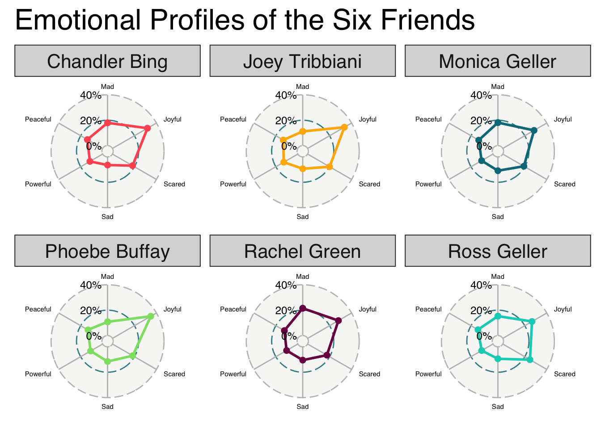

This article dives into the world of an all-time favorite series of mine - Friends.
via GIPHY
Friends Wikipedia:
Friends is an American television sitcom, created by David Crane and Marta Kauffman, which aired on NBC from September 22, 1994, to May 6, 2004, lasting ten seasons. With an ensemble cast starring Jennifer Aniston, Courteney Cox, Lisa Kudrow, Matt LeBlanc, Matthew Perry and David Schwimmer, the show revolves around six friends in their 20s and 30s who live in Manhattan, New York City. The series was produced by Bright/Kauffman/Crane Productions, in association with Warner Bros. Television. The original executive producers were Kevin S. Bright, Kauffman, and Crane.
The dataset I will be analyzing comes from the friends R package for the Friends transcripts and additional information. The friends package can be installed from CRAN with install.packages("friends"). h/t to Emil Hvitfeldt for aggregating, packaging and sharing this data with us! I learned about the existence of this awesome dataset thanks to the TidyTuesday project.
TidyTuesday
Join the R4DS Online Learning Community in the weekly #TidyTuesday event!
Every week we post a raw dataset, a chart or article related to that dataset, and ask you to explore the data.
While the dataset will be “tamed”, it will not always be tidy! As such you might need to apply various R for Data Science techniques to wrangle the data into a true tidy format.
The goal of TidyTuesday is to apply your R skills, get feedback, explore other’s work, and connect with the greater #RStats community!
As such we encourage everyone of all skills to participate!
Setup
Let’s start with the basic setup for my analysis. Here I just load the tidytuesdayR package for downloading the data as efficiently as possible.
# setup the file and load the necessary packages
knitr::opts_chunk$set(echo = TRUE)
library(tidytuesdayR)
# load the data from the TidyTuesdayR package
friends <- tt_load('2020-09-08')
##
## Downloading file 1 of 3: `friends.csv`
## Downloading file 2 of 3: `friends_info.csv`
## Downloading file 3 of 3: `friends_emotions.csv`
library(tidyverse)
library(scales)
library(glue)
theme_set(theme_light())
Quality over time
I briefly mentioned already that the series is an all-time favorite of mine, but that is, of course, just my personal taste. Also, it can be very difficult to keep up the quality of a series for 10 seasons. Thus, let’s have look at the information we got to answer the question: how did viewership and IMDb ratings evolve over time?
# Graph ratings over time
ratings <- friends$friends_info %>%
select(-directed_by, -written_by, -us_views_millions) %>%
mutate(episode_title = glue("{ season }.{ episode } { title }"), episode_title = fct_reorder(episode_title, season + .001 * episode)) %>%
ggplot(aes(as.integer(episode_title), imdb_rating)) +
geom_line() +
geom_point(aes(color = factor(season),
text = paste(title,
'<br>IMDb rating:', imdb_rating))) +
labs(title = "IMDb Ratings Over Time",
x = "Episode number",
y = "IMDb Rating",
color = "Season")
# Make the plots interactive with Plotly
library(plotly)
ratings <- ggplotly(ratings, tooltip = "text", dynamicTicks = TRUE)
ratings
Looking at the plot above, we can see that the general quality of the series did not decline over time. The ratings are exceptionally high across all episodes, with the lowest rated episode being “The One with the Invitation” (7.2). Well, maybe the person responsible for the rating was as big of a fan as I am and in reality no one was watching the series anymore towards its end. Let’s find out.
# Graph views over time
views <- friends$friends_info %>%
select(-directed_by, -written_by, -imdb_rating) %>%
mutate(episode_title = glue("{ season }.{ episode } { title }"), episode_title = fct_reorder(episode_title, season + .001 * episode)) %>%
ggplot(aes(as.integer(episode_title), us_views_millions)) +
geom_line() +
geom_point(aes(color = factor(season),
text = paste(title,
'<br>Views (millions):', us_views_millions))) +
labs(title = "Viewership Over Time",
x = "Episode number",
y = "US views (millions)",
color = "Season")
# Make the plots interactive with Plotly
library(plotly)
views <- ggplotly(views, tooltip = "text", dynamicTicks = TRUE)
views
Even though it is possible to identify a negative trend in viewership from season 2 to season 7 - with “The One with the Vows” as the low point - the series excited more than 15 million US viewers in every episode. The spikes in the total views for “The One After the Superbowl” and “The Last One” are due to the fact that these episodes aired as double features. In sum, I think it is fair to say that the series was a great success!
via GIPHY
Who talks the most?
# combine all the available tables into one
friends_emotions <- left_join(friends$friends_emotions, friends$friends)
friends_emotions_info <- left_join(friends_emotions, friends$friends_info)
# define the main characters
main_characters <- c("Rachel Green", "Monica Geller", "Phoebe Buffay", "Joey Tribbiani", "Ross Geller", "Chandler Bing")
# assign pictures to each character
ross <- "https://static.wikia.nocookie.net/friends/images/8/89/Square_Ross.jpg"
joey <- "https://upload.wikimedia.org/wikipedia/en/d/da/Matt_LeBlanc_as_Joey_Tribbiani.jpg"
chandler <- "https://static.wikia.nocookie.net/friends/images/c/cc/Square_Chandler.jpg"
monica <- "https://static.wikia.nocookie.net/friends/images/b/bf/Square_Monica.jpg"
phoebe <- "https://static.wikia.nocookie.net/friends/images/7/79/Phoebe.jpg"
rachel <- "https://static.wikia.nocookie.net/friends/images/f/f5/Rachel.jpg"
# clean up the data a bit and combine
tab_df <- friends_emotions_info %>%
select(speaker) %>%
filter(speaker %in% main_characters) %>%
add_count(speaker, name = "total_utterances") %>%
unique() %>%
mutate(ratio = percent(total_utterances/sum(total_utterances))) %>%
select(-total_utterances)
tab_df$head <- c(ross, joey, chandler, monica, phoebe, rachel)
tab_df <- tab_df %>%
relocate(head, .after = speaker)
Using my processed dataset, I created a unique visualization using the gt package.
library(gt)
library(kableExtra)
Thus, in a first step I had to create a theme for my table to present the data in style.
# theme to apply for the table
gt_theme_friends <- function(data,...) {
data %>%
opt_all_caps() %>%
opt_table_font(
font = list(
google_font("Chivo"),
default_fonts()
)
) %>%
tab_style(
style = cell_borders(
sides = "bottom", color = "transparent", weight = px(2)
),
locations = cells_body(
columns = TRUE,
# This is a relatively sneaky way of changing the bottom border
# Regardless of data size
rows = nrow(data$`_data`)
)
) %>%
tab_options(
column_labels.background.color = "white",
table.border.top.width = px(3),
table.border.top.color = "transparent",
table.border.bottom.color = "transparent",
table.border.bottom.width = px(3),
column_labels.border.top.width = px(3),
column_labels.border.top.color = "transparent",
column_labels.border.bottom.width = px(3),
column_labels.border.bottom.color = "black",
data_row.padding = px(1),
source_notes.font.size = 12,
table.font.size = 16,
heading.align = "left",
)
}
Et voilà, let’s have a look at the table!
# output the table!
tab_df %>%
gt() %>%
text_transform(
location = cells_body(vars(head)),
fn = function(x){
web_image(x)
}
) %>%
cols_label(
speaker = "Friend",
head = "",
ratio = "fraction of total utterances",
) %>%
cols_align(
align = "center",
columns = vars(ratio)
) %>%
gt_theme_friends() %>%
tab_source_note(
source_note = md("**Data**: [`friends` R package](https://github.com/EmilHvitfeldt/friends)<br>**Table**: [@nicolakollmann](https://twitter.com/NicolaKollmann)")
) %>%
tab_header(
title = md("Some insights into the  universe"),
subtitle = md("A deep dive into the `gt` package")
)
| Friend |
|
fraction of total utterances |
| Ross Geller |
 |
17.676% |
| Joey Tribbiani |
 |
16.029% |
| Chandler Bing |
 |
17.921% |
| Monica Geller |
 |
16.602% |
| Phoebe Buffay |
 |
15.896% |
| Rachel Green |
 |
15.876% |
Data: friends R package
Table: @nicolakollmann |
It seems like the authors of the series kept close track of the appearances of each main character. There is not much variation in the fraction of total utterances.
Emotional Friends
As the final part of this article I will make use of the ggradarpackage and visualize the emotional profiles of our six friends.
library(ggradar)
emotion_radar <- friends_emotions_info %>%
select(emotion, speaker) %>%
filter(speaker %in% main_characters) %>%
filter(emotion != "Neutral") %>%
add_count(speaker, name = "total_utterances") %>%
add_count(speaker, emotion) %>%
pivot_wider(names_from = emotion, values_from = n, values_fn = mean) %>%
mutate(across(3:8, ~. / total_utterances)) %>%
select(-total_utterances) %>%
ggradar(values.radar = c("0%", "20%", "40%"), grid.mid = 0.2, grid.max = 0.4, grid.label.size = 4, axis.label.size = 2, group.line.width = 1, group.point.size = 2, plot.legend = FALSE, plot.title = "Emotional Profiles of the Six Friends") + facet_wrap(~group)
emotion_radar

Overall, the dominant emotion seems to be joy, which does not come as a surprise to anyone who has watched a single episode of the series. And if you need further visualization of Ross being scared, I will just leave this final GIF here :wink:
via GIPHY
There is a ton of possibilities for future articles on this subject and I might give it another shot to familiarize myself with new R packages.
 universe
universe